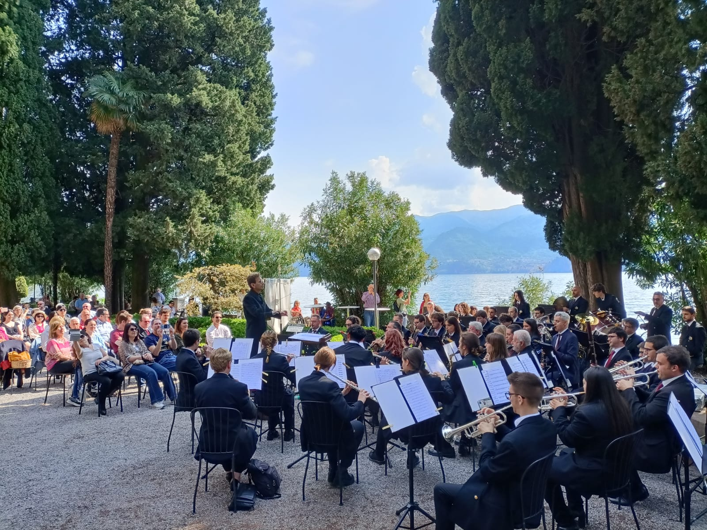
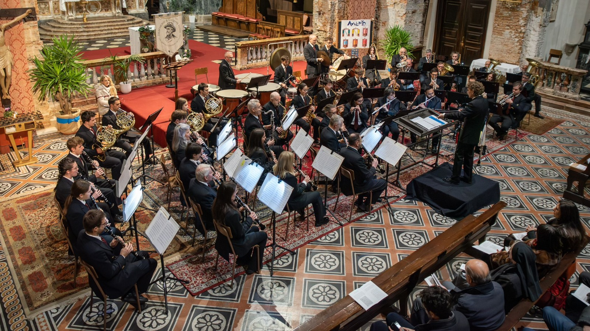

Maggio 2026
Torna «Pronti, settembre, via!»
Il progetto della Filarmonica dedicato ai bambini delle scuole elementari torna con musica, gioco e divertimento.
Leggi la notiziaStoria che continua a suonare insieme alla città. Concerti, tradizione e una scuola in cui iniziare il proprio viaggio nella musica.

Dal 1809, generazioni di musicisti hanno dato voce a Lecco.
Scopri di più Scuola allieviLezioni di strumento, propedeutica e Junior Band per crescere insieme.
Scopri di più PartecipaAiutaci a portare avanti concerti, scuola e vita associativa.
Scopri di più
Il progetto della Filarmonica dedicato ai bambini delle scuole elementari torna con musica, gioco e divertimento.
Leggi la notizia